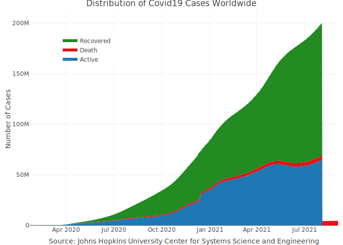

The coronavirus package provides a tidy format dataset of the 2019 Novel Coronavirus COVID-19 (2019-nCoV) epidemic. The raw data pulled from the Johns Hopkins University Center for Systems Science and Engineering (JHU CCSE) Coronavirus repository.
More details available here, and a csv format of the package dataset available here

Important Note
As this an ongoing situation, frequent changes in the data format may occur, please visit the package news to get updates about those changes
Installation
Install the CRAN version:
install.packages("coronavirus")
Install the Github version (refreshed on a daily bases):
# install.packages("devtools") devtools::install_github("RamiKrispin/coronavirus")
Data refresh
While the coronavirus CRAN version is updated every month or two, the Github (Dev) version is updated on a daily bases. The update_dataset function enables to overcome this gap and keep the installed version with the most recent data available on the Github version:
Note: must restart the R session to have the updates available
Alternatively, you can pull the data using the Covid19R project data standard format with the refresh_coronavirus_jhu function:
covid19_df <- refresh_coronavirus_jhu() head(covid19_df) #> date location location_type location_code location_code_type data_type value lat long #> 1 2020-01-25 Afghanistan country AF iso_3166_2 cases_new 0 33.93911 67.709953 #> 2 2020-03-25 Afghanistan country AF iso_3166_2 deaths_new 1 33.93911 67.709953 #> 3 2020-01-24 Afghanistan country AF iso_3166_2 cases_new 0 33.93911 67.709953 #> 4 2020-01-23 Afghanistan country AF iso_3166_2 cases_new 0 33.93911 67.709953 #> 5 2020-09-26 Afghanistan country AF iso_3166_2 deaths_new 2 33.93911 67.709953 #> 6 2020-09-25 Afghanistan country AF iso_3166_2 deaths_new 0 33.93911 67.709953

Usage
data("coronavirus")
This coronavirus dataset has the following fields:
-
date- The date of the summary -
province- The province or state, when applicable -
country- The country or region name -
lat- Latitude point -
long- Longitude point -
type- the type of case (i.e., confirmed, death) -
cases- the number of daily cases (corresponding to the case type)
head(coronavirus) #> date province country lat long type cases #> 1 2020-01-22 Afghanistan 33.93911 67.709953 confirmed 0 #> 2 2020-01-23 Afghanistan 33.93911 67.709953 confirmed 0 #> 3 2020-01-24 Afghanistan 33.93911 67.709953 confirmed 0 #> 4 2020-01-25 Afghanistan 33.93911 67.709953 confirmed 0 #> 5 2020-01-26 Afghanistan 33.93911 67.709953 confirmed 0 #> 6 2020-01-27 Afghanistan 33.93911 67.709953 confirmed 0
Summary of the total confrimed cases by country (top 20):
library(dplyr) summary_df <- coronavirus %>% filter(type == "confirmed") %>% group_by(country) %>% summarise(total_cases = sum(cases)) %>% arrange(-total_cases) summary_df %>% head(20) #> # A tibble: 20 x 2 #> country total_cases #> <chr> <int> #> 1 US 22136627 #> 2 India 10450284 #> 3 Brazil 8075998 #> 4 Russia 3344175 #> 5 United Kingdom 3026342 #> 6 France 2824920 #> 7 Turkey 2317118 #> 8 Italy 2257866 #> 9 Spain 2050360 #> 10 Germany 1928462 #> 11 Colombia 1771363 #> 12 Argentina 1714409 #> 13 Mexico 1524036 #> 14 Poland 1376389 #> 15 Iran 1280438 #> 16 South Africa 1214176 #> 17 Ukraine 1144943 #> 18 Peru 1026180 #> 19 Netherlands 878443 #> 20 Czechia 822716
Summary of new cases during the past 24 hours by country and type (as of 2021-01-09):
library(tidyr) coronavirus %>% filter(date == max(date)) %>% select(country, type, cases) %>% group_by(country, type) %>% summarise(total_cases = sum(cases)) %>% pivot_wider(names_from = type, values_from = total_cases) %>% arrange(-confirmed) #> # A tibble: 191 x 4 #> # Groups: country [191] #> country confirmed death recovered #> <chr> <int> <int> <int> #> 1 US 273854 3735 0 #> 2 Brazil 62290 1171 68593 #> 3 United Kingdom 60098 1035 153 #> 4 India 36867 429 38552 #> 5 Russia 23012 456 23387 #> 6 Germany 22824 575 13063 #> 7 South Africa 21606 399 8793 #> 8 France 20177 168 879 #> 9 Italy 19976 483 17040 #> 10 Mexico 16105 1135 8377 #> 11 Colombia 15795 353 12404 #> 12 Czechia 13115 178 2194 #> 13 Argentina 11057 144 9434 #> 14 Poland 10744 437 9139 #> 15 Indonesia 10046 194 6628 #> 16 Turkey 9537 181 7902 #> 17 Portugal 9478 111 5899 #> 18 Canada 8393 134 6611 #> 19 Israel 8077 49 3543 #> 20 Japan 7790 59 3632 #> 21 Netherlands 7380 137 202 #> 22 Iran 5924 82 8812 #> 23 Lebanon 5414 20 1730 #> 24 Ukraine 5143 94 8254 #> 25 Ireland 4843 9 0 #> 26 Romania 4403 86 1508 #> 27 Chile 4361 63 3805 #> 28 Slovakia 4072 48 3122 #> 29 Panama 3735 43 2183 #> 30 United Arab Emirates 2998 5 2264 #> 31 Pakistan 2899 46 1524 #> 32 Hungary 2716 114 6723 #> 33 Tunisia 2611 45 1353 #> 34 Malaysia 2451 5 1401 #> 35 Austria 2278 46 2167 #> 36 Dominican Republic 2106 0 1164 #> 37 Georgia 2058 22 529 #> 38 Belgium 1991 46 0 #> 39 Philippines 1945 34 285 #> 40 Slovenia 1889 26 344 #> # … with 151 more rows
Plotting the total cases by type worldwide:
library(plotly) coronavirus %>% group_by(type, date) %>% summarise(total_cases = sum(cases)) %>% pivot_wider(names_from = type, values_from = total_cases) %>% arrange(date) %>% mutate(active = confirmed - death - recovered) %>% mutate(active_total = cumsum(active), recovered_total = cumsum(recovered), death_total = cumsum(death)) %>% plot_ly(x = ~ date, y = ~ active_total, name = 'Active', fillcolor = '#1f77b4', type = 'scatter', mode = 'none', stackgroup = 'one') %>% add_trace(y = ~ death_total, name = "Death", fillcolor = '#E41317') %>% add_trace(y = ~recovered_total, name = 'Recovered', fillcolor = 'forestgreen') %>% layout(title = "Distribution of Covid19 Cases Worldwide", legend = list(x = 0.1, y = 0.9), yaxis = list(title = "Number of Cases"), xaxis = list(title = "Source: Johns Hopkins University Center for Systems Science and Engineering"))

Plot the confirmed cases distribution by counrty with treemap plot:
conf_df <- coronavirus %>% filter(type == "confirmed") %>% group_by(country) %>% summarise(total_cases = sum(cases)) %>% arrange(-total_cases) %>% mutate(parents = "Confirmed") %>% ungroup() plot_ly(data = conf_df, type= "treemap", values = ~total_cases, labels= ~ country, parents= ~parents, domain = list(column=0), name = "Confirmed", textinfo="label+value+percent parent")

Data Sources
The raw data pulled and arranged by the Johns Hopkins University Center for Systems Science and Engineering (JHU CCSE) from the following resources:
- World Health Organization (WHO): https://www.who.int/
- DXY.cn. Pneumonia. 2020. https://ncov.dxy.cn/ncovh5/view/pneumonia.
- BNO News: https://bnonews.com/index.php/2020/04/the-latest-coronavirus-cases/
- National Health Commission of the People’s Republic of China (NHC):
http:://www.nhc.gov.cn/xcs/yqtb/list\_gzbd.shtml
- China CDC (CCDC): http:://weekly.chinacdc.cn/news/TrackingtheEpidemic.htm
- Hong Kong Department of Health: https://www.chp.gov.hk/en/features/102465.html
- Macau Government: https://www.ssm.gov.mo/portal/
- Taiwan CDC: https://sites.google.com/cdc.gov.tw/2019ncov/taiwan?authuser=0
- US CDC: https://www.cdc.gov/coronavirus/2019-ncov/index.html
- Government of Canada: https://www.canada.ca/en/public-health/services/diseases/2019-novel-coronavirus-infection/symptoms.html
- Australia Government Department of Health:https://www.health.gov.au/news/health-alerts/novel-coronavirus-2019-ncov-health-alert
- European Centre for Disease Prevention and Control (ECDC): https://www.ecdc.europa.eu/en/geographical-distribution-2019-ncov-cases
- Ministry of Health Singapore (MOH): https://www.moh.gov.sg/covid-19
- Italy Ministry of Health: http://www.salute.gov.it/nuovocoronavirus
- 1Point3Arces: https://coronavirus.1point3acres.com/en
- WorldoMeters: https://www.worldometers.info/coronavirus/
- COVID Tracking Project: https://covidtracking.com/data. (US Testing and Hospitalization Data. We use the maximum reported value from “Currently” and “Cumulative” Hospitalized for our hospitalization number reported for each state.)
- French Government: https://dashboard.covid19.data.gouv.fr/
- COVID Live (Australia): https://covidlive.com.au/
- Washington State Department of Health:https://www.doh.wa.gov/Emergencies/COVID19
- Maryland Department of Health: https://coronavirus.maryland.gov/
- New York State Department of Health: https://health.data.ny.gov/Health/New-York-State-Statewide-COVID-19-Testing/xdss-u53e/data
- NYC Department of Health and Mental Hygiene: https://www1.nyc.gov/site/doh/covid/covid-19-data.page and https://github.com/nychealth/coronavirus-data
- Florida Department of Health Dashboard: https://services1.arcgis.com/CY1LXxl9zlJeBuRZ/arcgis/rest/services/Florida_COVID19_Cases/FeatureServer/0 and https://fdoh.maps.arcgis.com/apps/opsdashboard/index.html#/8d0de33f260d444c852a615dc7837c86
- Palestine (West Bank and Gaza): https://corona.ps/details
- Israel: https://govextra.gov.il/ministry-of-health/corona/corona-virus/
- Colorado: https://covid19.colorado.gov/data)